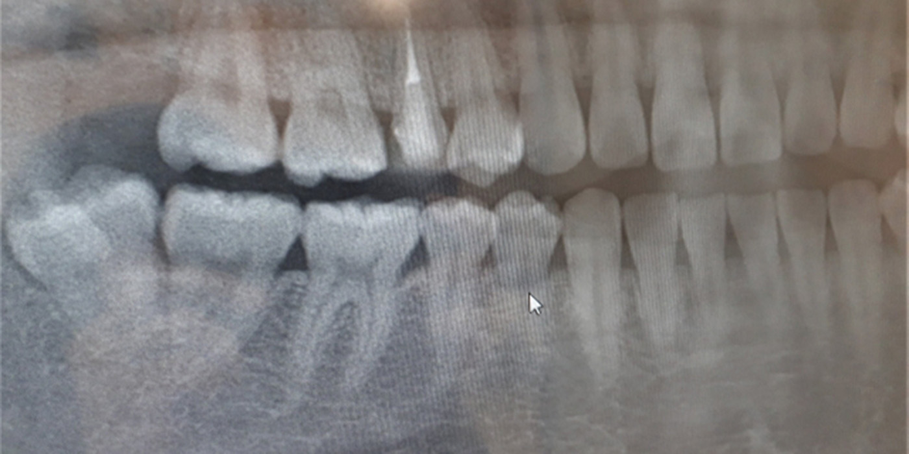

口腔外科(親知らず抜歯)SURGERY

通常、永久歯歯上下左右7本ずつはえてくるのですが、7番目の歯のさらに奥にある８番目の歯が成長と共に生えてくることがあります。その歯が親知らずになります。
まっすぐ生えていて、生活に支障がない場合は抜歯を勧めることはありませんが、基本的に当院では親知らずの抜歯を勧めております。
親知らずについて
親知らずはいつ頃生える
親知らずそのものは小学校高学年の段階でレントゲンで確認することはできます。実際にはえてくるのは18歳以上のことが多く日々、診療をしていると25歳前後から痛みや腫れを伴った萌出することが多いです。
生えてくるときの痛み
親知らずが歯茎を突き破ってはえてくることによる炎症、腫れの痛みや親知らずが頭が頬っぺたにひっかかって口内炎のような症状を起こすこともあります。また、親知らずは非常に歯磨きがしずらい位置にはえてくるので痛みを感じた頃にはすでに大きな虫歯になっていることもあります。
親知らずと歯並び
歯並びの不正は顎の大きさに対して歯の大きさが合っていないことにより引き起こされることがあるため、本来、はえるスペースのないところに頭の大きな親知らずが上下左右４本はえることにより歯並びの不正が起こることはあります。
医院の選び方
大学病院の口腔外科で勤務経験があったり口腔外科専門医が在籍しているクリニックを選んでいただければ良いと思います。
当院の親知らず抜歯
基本的には親知らずであれば全ての症例で対応可能です。あまりに下顎管という大きな神経に親知らずが接している場合、大学病院に送るケースがございます。
また、親知らず自体は抜けるはえ方だとしても、「上下左右同時に抜いてほしい」だったり、嘔吐反射や極度の緊張によって全身麻酔下での抜歯を希望される場合は大学病院に紹介させていただくこともあります。
親知らず抜歯の難易度
まっすぐ生えている場合
| 抜歯の難易度 | ☆☆ |
|---|---|
| 治療時間 | 約15分 |
| 治療費 | 約3,000円 |
横向きに生えている場合
| 抜歯の難易度 | ☆☆☆ |
|---|---|
| 治療時間 | 約30分 |
| 治療費 | 約5,000円 |
埋まっている場合
| 抜歯の難易度 | ☆☆☆☆ |
|---|---|
| 治療時間 | 約30〜60分 |
| 治療費 | 約7,000円 |
親知らずの注意点
抜歯後、特に骨を削った場合はほぼ間違いなく腫れます。抗生剤が処方されるので必ず決まった分量を飲みきってください。
また、傷口は血液が貯まることによって治っていきますので、唾液に血が混じったとしても過度のうがいは控えて下さい。抜歯当日の激しい運動やお風呂は血流が良く出血しやすくなるので控えて下さい。
抜歯治療の流れ
埋まっている親知らずの場合は、麻酔注射を行います。麻酔注射前に表面麻酔を行い注射の痛みを緩和いたしますので、痛みをほとんど感じることなく麻酔できます。
親知らずの1つ手前の7番目の歯の真ん中あたりから親知らずが埋まっている箇所まで切開し歯茎を開きます。
切開して埋まっている親知らずの一部を確認後、親知らずの頭半分以上が見えるくらいまで骨を削ります。親知らずの頭が見えてきたら頭を切断して抜き、その後根っこの部分を抜きます。
抜いたら、ただれた歯茎を取り除きます。その後、消毒して切開した歯茎を縫合して治療終了です。
抜歯後の腫れについて
- 抜歯後3日間は強い痛みと腫れ
- 1週間経つと痛みが収まり、痛み止めで緩和できる程度
- 1週間後は抜糸をしてから痛みを無くなりますが違和感が続く
- 2週間目以降は違和感もなくなり痛みが消える
埋まっている歯の抜いたので、抜いたくぼみが平になるには２ヶ月以上要すると思います。
まずはご相談ください
私達は患者様からお口の健康を任せていただけるように、頼りがいのある歯科医院を目指しています。お口のトラブルがございましたら、お気軽にご相談ください。